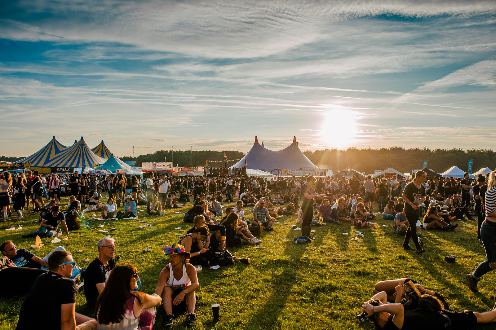

Dit is een textuur ik gebruik als achtergrond als er afbeelding bovenop komen zoals op de pagina: "podia".
 Dit is de achtergrond van de homepagina.
Dit is de achtergrond van de homepagina.

Dit is een warme, "zomerse" afbeelding die bebruikt wordt als achtergrond bij het kopen van tickets.